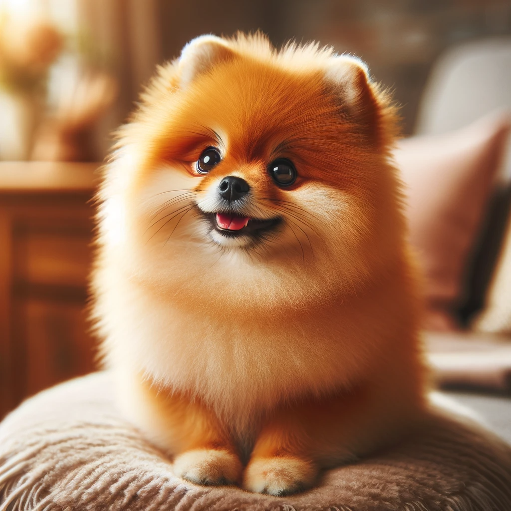
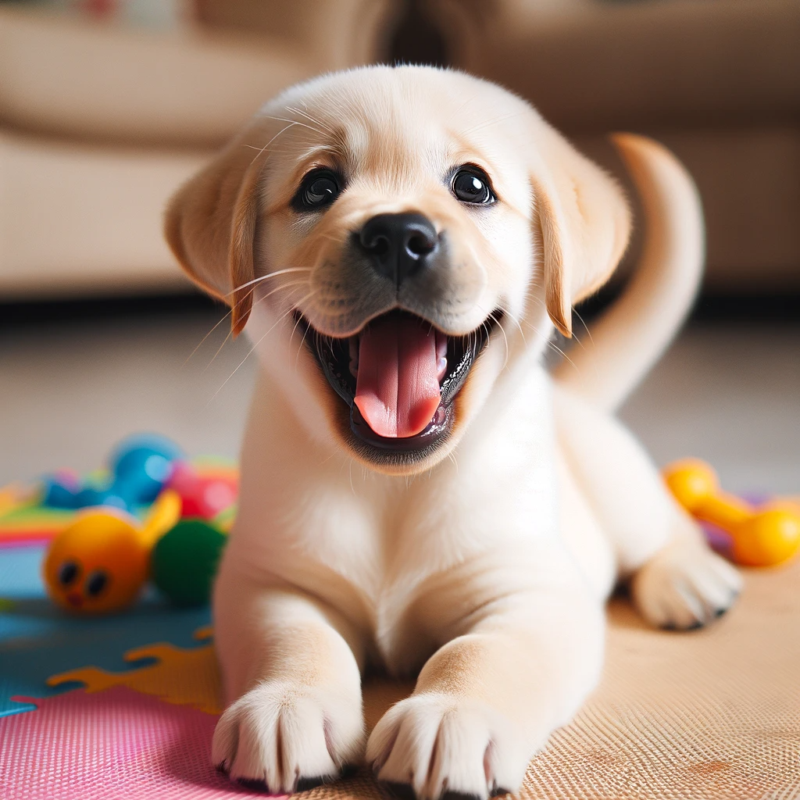
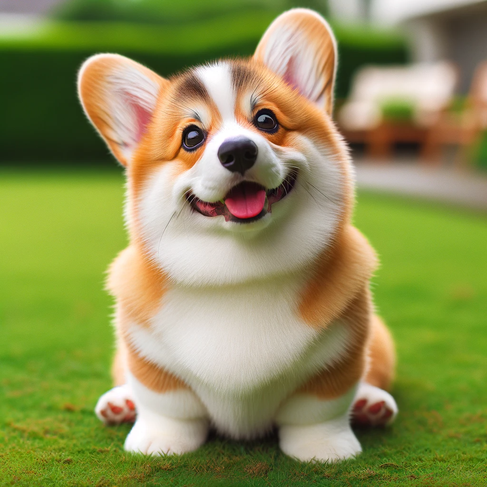
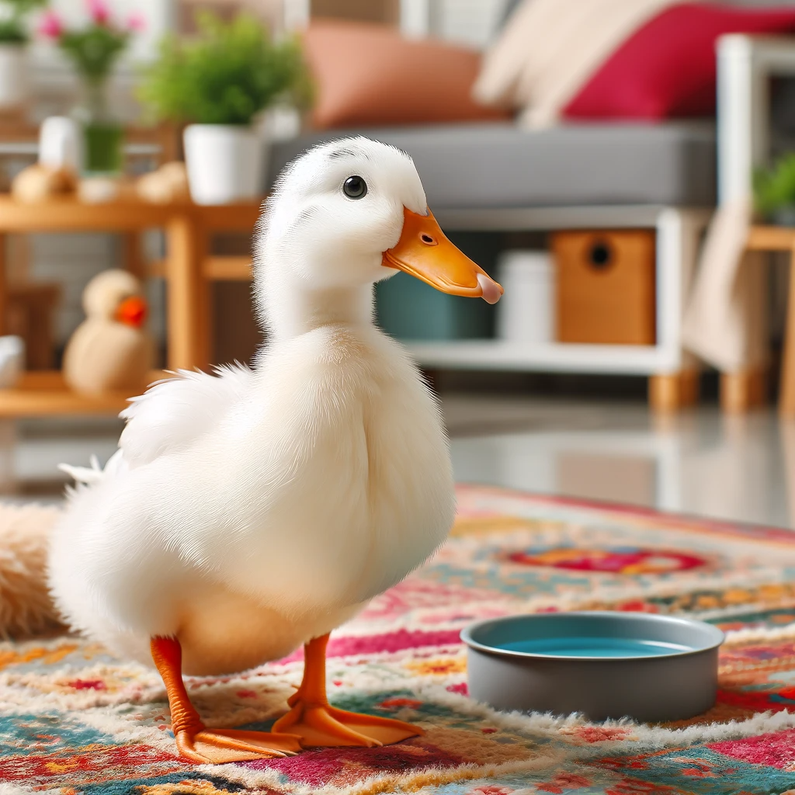
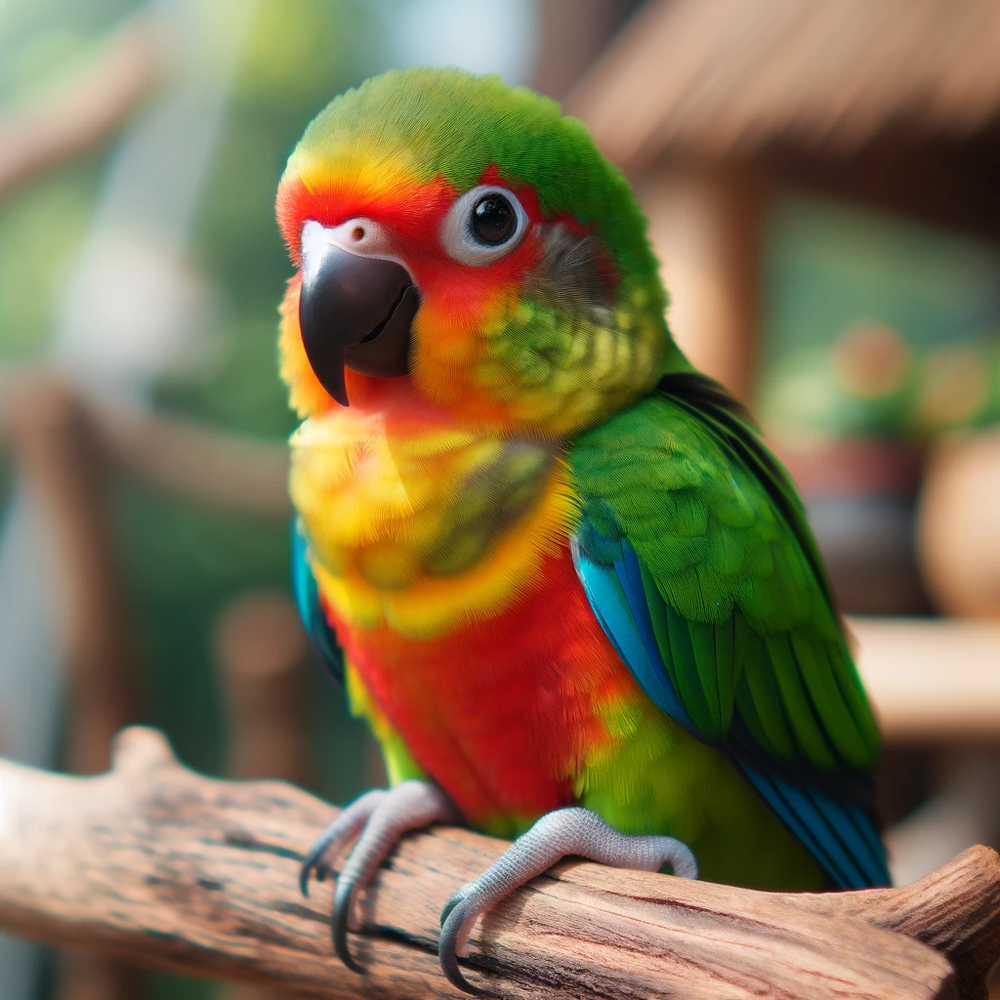

Skip to Main Content
Pets
Pets' Bios
Pomeranian Dog

- Name: Teddy
- Age: 1 year
- Breed: Pomeranian
- Personality: Teddy is a bundle of joy with his fluffy, bright orange coat and big, sparkly eyes. He's always full of energy and loves to play. His curious nature and playful antics make him the star of any gathering. Despite his small size, Teddy has a big personality and is always eager to make new friends. He enjoys cuddle time and is a great companion for cozy evenings at home.
Labrador Retriever Puppy

- Name: Bailey
- Age: 4 months
- Breed: Labrador Retriever
- Personality: Bailey is the epitome of cuteness with her soft, creamy coat and big, brown eyes. As a young Labrador puppy, she embodies innocence and curiosity. Her gentle nature makes her a delightful companion, especially for families. Bailey loves to explore her surroundings, often tilting her head inquisitively at new sights and sounds. She's quick to learn and eager to please, making her training a joyful experience. Bailey's calm and inviting demeanor makes her the perfect cuddly friend for anyone who loves the sweet and playful spirit of Labradors.
Pembroke Welsh Corgi

- Name: Robbie
- Age: 1.5 years
- Breed: Pembroke Welsh Corgi
- Personality: Robbie is as charming as she is cute. With her bright, tricolor coat and those large, expressive ears, she's hard to resist. Daisy has a playful and slightly mischievous personality, always ready for a game or a cuddle. Despite her short legs, she's quite agile and enjoys brisk walks and playtime on the lawn. Her happy demeanor and adorable antics make her a wonderful pet for families or anyone looking for a cheerful companion.
Domesticated Call Duck

- Name: Puddles
- Age: 2 years
- Breed: Call Duck
- Puddles is an adorable Call Duck who has adapted wonderfully to a cozy home environment. Her fluffy white feathers and bright orange beak make her a delightful sight. Puddles is curious and content, often found waddling around on her colorful rug or playfully interacting with her duck-friendly toys. She has a small water bowl for splashing, showing that she's well cared for as a pet. Puddles brings a unique and joyful presence to any home, perfect for those looking for a less conventional but incredibly charming companion.
Tropical Parrot

- Name: Rio
- Age: 1 year
- Breed: Tropical Parrot
- Rio is a vibrant and curious parrot with a love for interaction and play. His colorful plumage, featuring bright green, red, yellow, and blue, makes him a captivating sight. Always curious, Rio enjoys exploring his surroundings and is quick to greet anyone with a chirp. He's quite intelligent and can learn a few words or tricks, making him an entertaining companion. Rio thrives in an engaging environment where he can socialize and show off his playful nature.